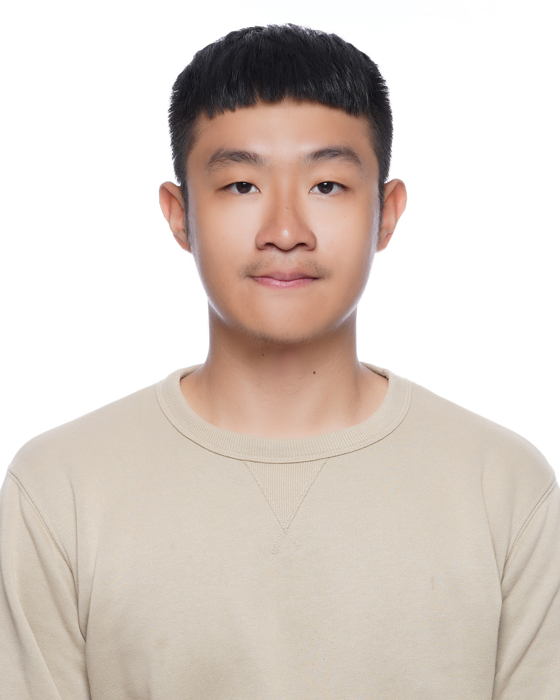
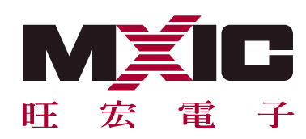
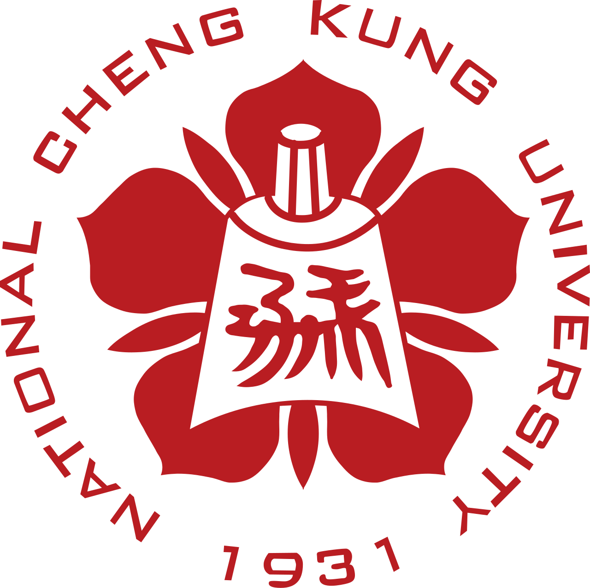
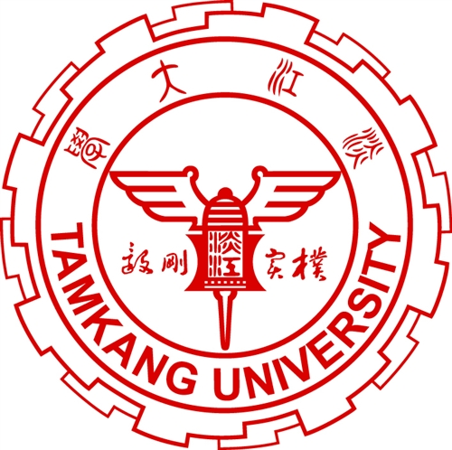
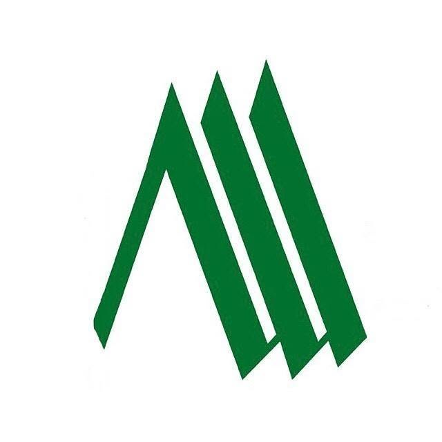

Liu, Yu-shan
Profile
I am currently pursuing a master's degree at NCKU. I am a fast learner with strong analytical, problem-solving, and stress-management skills. Through academic projects, extracurricular activities, and investment research, I have developed the ability to solve problems through analysis, implementation, and continuous validation.
My academic focus is machine learning and data analysis, and I am proficient in C, C++, and Python with hands-on project experience. I am also passionate about equity research and industry analysis, applying fundamental analysis and data-driven research to evaluate business prospects and investment opportunities.
Work Experience

Macronix
In my work experience, I was primarily responsible for machine maintenance and equipment management, while also participating in projects focused on optimizing production processes and improving equipment functionality. Through projects aimed at enhancing equipment stability, production efficiency, and functionality, I developed strong cross-functional collaboration and communication skills, while also learning to independently identify problems, develop solutions, and continuously improve equipment and production processes.
- Fab-Wide Equipment Performance Improvement Program — Improved the yield of a key product by 2%, generating approximately NT$10 million in annual cost savings, while maintaining monthly equipment utilization at 90% or above.
- Cost Down Program — Developed a quartz consumables recycling and cost optimization program, reducing monthly procurement expenses by approximately NT$300,000 (15%).
Education

National Cheng Kung University, NCKU
During my graduate studies, I focused primarily on machine learning and software development. I developed a strong understanding of the core principles behind deep learning algorithms and gained practical experience in model compression, performance optimization, and model deployment. In addition, driven by my strong interest in financial markets, I took courses in investment banking and investment strategies, where I learned about IPO analysis, corporate valuation, and financial markets.
- Machine Learning-Based Metabolite Screening Platform (2025) — Developed a web-based platform that applies machine learning to identify metabolites matching user-defined criteria, prioritizing candidate metabolites potentially associated with cancer from a large pool of unvalidated data and reducing the scope, time, and cost of downstream experimental validation.
- UAV Semantic Segmentation Competition (2025) — Developed a deep learning semantic segmentation model to classify objects in UAV aerial images, including trees, roads, buildings, and vehicles; ranked 4th on the private leaderboard among 69 teams.

Tamkang University, TKU
During my undergraduate studies, I focused on aerospace engineering and took courses in electronics, control systems, and fluid mechanics. These experiences provided me with a solid engineering foundation and strengthened my problem-solving and analytical skills.
- Solar Power Monitoring System for a Green-Energy UAV, Project (2020) — Developed a system to monitor and analyze UAV power consumption during flight, determining optimal switching between solar and battery power to improve energy efficiency.
Activities

TMBA, ECM
- Conducted equity research on ASE Technology, covering the packaging & testing segment of the semiconductor supply chain.

Mountain Climbing Club, TKU
- Led four trekking trips, overseeing pre-trip planning, team coordination, and emergency response.
- Designed and delivered training in mountaineering skills, preparing junior members to lead trips independently.
Projects
APT ( 7734.TWO ) - Equity Research Report
This is an equity research report on APT, covering an industry overview, the company's competitive advantages, and its growth drivers.
Volatility Dashboard
This is a volatility dashboard for the TAIEX Index and Taiwan Index Futures, designed to assess overall market volatility and support strategy evaluation. More market data and indicators will be continuously incorporated to provide broader insights into market dynamics and enhance strategy analysis.
Click to open ↗DEM Screener — ML-Based Metabolite Screening Platform
A web-based platform that applies machine learning (AUC, Feature Importance, Fold Change, and statistical significance testing) to screen large pools of unvalidated metabolite data, prioritizing candidate metabolites potentially associated with cancer and narrowing down the scope for downstream experimental validation.